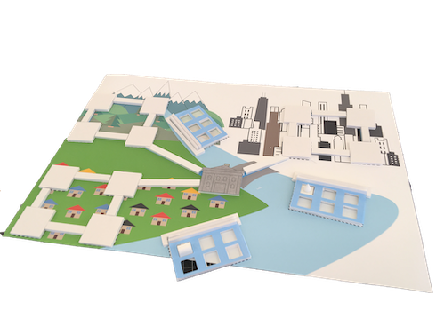
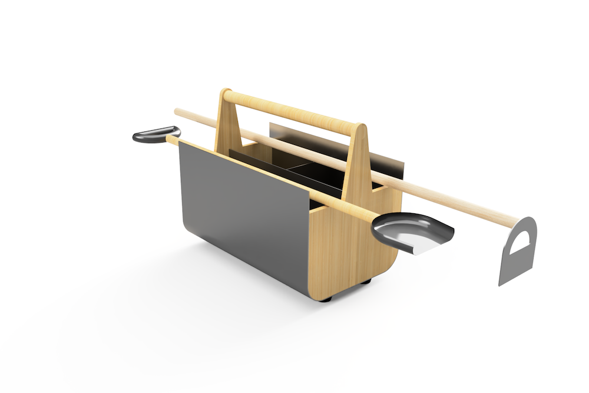
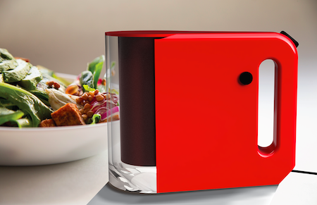
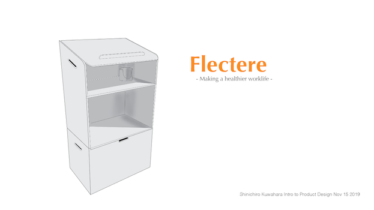

Hi, I'm SHINN
A researcher, a data analyst and a designer
My background is data analysis and user research at Toyota, and I'm a graduate student of Institute of Design at Illinois Tech.
Mobility
UX / UI Design, System Design

Essential
AI-powered local delivery that keeps your kitchen stocked with the essentials.
User Research

Insights of Alt. Fuel Car User
Quantitative & qualitative analysis to understand user insights and reevaluate a product core value.
UX / UI Design
Time Traveler in Chicago
An Augumented reality application that passengers in a buy enjoy the city's history.
Education
Speculative Design, Digital & Physical Design
Teleducation
A remote robot that reduces physical learning constraints for students
UX / UI Design
Flood
A board game that helps the players learn about how to deal with the natural desaster
*Under Construction
UX / UI Design

Gozipedia
A fun learning app of real creatures through "Kaiju", giant imagenary monsters
Product
Physical Design
Engardener
A toolbox for home gardeners
Physical Design
Slice
A redefined food slice shooter
Physical Design
Flactere
A standing & sitting working desk